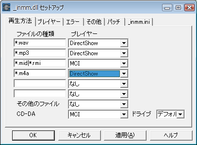

天翔記では、BGMを「TSMod」や「ScenarioMod」、あるいは、｢神パッチ」によってシチュエーションを細分化し、
｢_inmm｣によって好きなHDDのローカル曲に入れ替えることが可能です。
_inmm自体の説明は_inmmのサイトを参照してください。
_inmmでBGMを鳴らす際には、｢DirectShow｣で再生するか、｢Winamp｣で再生するか、というのが大きな２つの選択候補があります。
これは、_inmmのカスタムプログラム｢_inmmcnf.exe｣にて設定が可能です。
現在、多くの人が、iTunesに、m4a(AAC)のフォーマットにて音楽を貯め込んでいると思われますが、
DirectShowを選択すれば、「mp3」でも「m4a」でも再生可能です。

Windows7以下で、Winampを選択した場合、DirectShowに比べると、_inmmとwinampの間の通信がネックであるため、
モッサリとした印象を受けることとなるでしょう。その点を見れば確かにマイナスです。
しかし、Winampの高度な機能によって、良好でカスタムされた心地よい音での再生や、
再生中の曲名を天翔記のメニューバーに反映させるといったコトが可能となります。